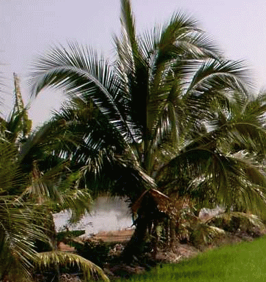
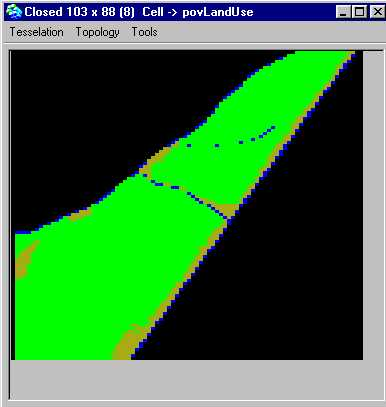
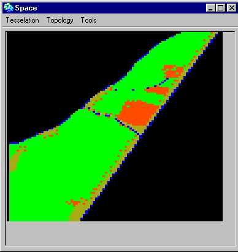
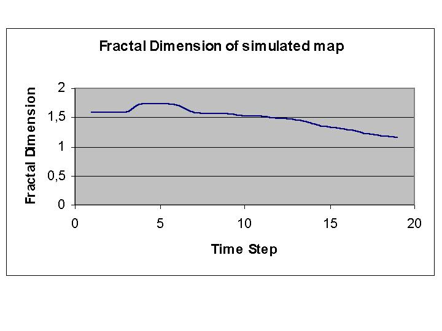

|
Nong ChokDYNAMIQUES DES CHANGEMENTS DUTILISATION DES TERRES EN MILIEU PERI-URBAIN A BANGKOKSk. Morshed Anwar ( Asian Institute of Technology, Bangkok, Thailand) 
Il est important détudier les forces en jeu qui contribuent aux changements dutilisation des terres pour en comprendre les processus et les dynamiques. Les modèles de simulation qui prennent explicitement lespace en compte permettent dévaluer des hypothèses dévolution de paysage sous plusieurs scénarios. Notre recherche propose un modèle dynamique de simulation de changement dutilisation de la terre de la région de Nong Chok (Thaïlande centrale). Ces simulations ont été effectuées en intégrant des données issues de télédétection, de systèmes dinformation géographiques (SIG) dans Cormas.
La méthodologie de notre travail repose sur trois phases :
Le modèle Larchitecture du modèle repose sur un automate cellulaire et sur des fonctions de transition qui simulent les dynamiques de changement dutilisation de la terre, en intégrant des processus biophysiques et humains.Notre études a été conçue pour simuler les dynamiques de changements dutilisation des terres, en particulier des rizières à laquaculture. Le modèle a été conçu sur la base de 19 années de données (de 1981 à 2000). Ces données qui décrivent lhistorique des shémas spatiaux dutilisation des terres proviennent de photographies aériennes de cette périodes. Les fonctions de transitions ont été développées selon un calcul denthropie en utilisant lalgorithme ID3. La configuration initiale de lespace est basée sur une carte dutilisation des terres de 1981. Les autres entrées du modèles sont les variables spatiales et humaines : distance au canal, age, propriétaires, religion, éducation, et taille de la famille des fermiers. A part quelques exceptions, les résultats des simulations montrent la performance du modèle pour la diffusion de laquaculture. 
 Description du modèlePour valider ce modèle de simulation des dynamiques de changements doccupation de lespace, les cartes simulées ont été compared avec la carte originale dutilisation de lespace de 2000. en utilisant un ensemble dindices paysagers : nombre de cellules en aquaculture, densité des parcelles, taille moyenne des parcelles, densité des fronts, dimension fractale et nombre moyen des voisins aux contacts. Dautres études pourrait permettre de simuler le changement dutilisation de la terre avec plus dexactitude, en intégrant dautres variables.
RéférencesSK, Morshed Anwar, LAND USE CHANGE DYNAMICS: A DYNAMIC SPATIAL SIMULATION, AIT master dissertation, School of Advanced Technologies, Bangkok, November 2002 Pour en savoir plus, téléchargez le mémoire, ou contactez lauteur Sk Morshed Anwar |